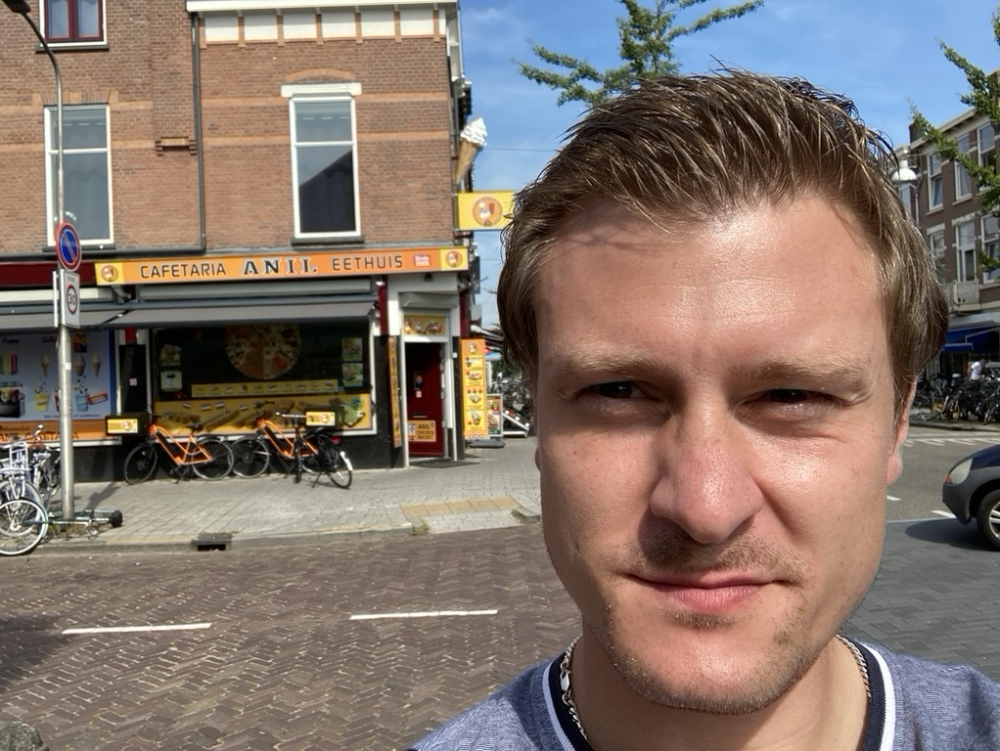

Guido Rennhack

Contiuously looking for challenges. Life is only meaningful in the margins, not in the center.
Education
- 1996 - 2000: Primary School
- 2000 - 2002: Orientierungsstufe KGS Sehnde
- 2002 - 2006: Realschule KGS Sehnde
- 2006 - 2010: Oberstufe KGS Sehnde; Abschluss Abitur
- 2011 - 2015: Student at the Technische Universitaet Braunschweig: Subject English and German Literature and Linguisitcs
- 2016 - 2021: Student at the Radboud University Nijmegen: Subject Psychology, Degree: Bachelor
Experience
- Part-time job as IT technician
- Worked on and off as a mailman for the better part of a decade, part- and fulltime
- Social Work as a family helper
- Coached Soccer Teams
Skills
- Analytical Thinking
- Tenacity
- Empathy
My Hobbies
My Contact Details